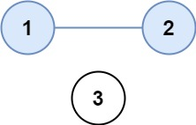

547. 省份数量
| 题目信息 | 内容 |
|---|---|
| 难度 | 中等 |
| 核心模式 | 邻接矩阵上数连通分量 |
| 时间复杂度 | O(n²) |
| 空间复杂度 | O(n) |
题目与约束
有 n 个城市，其中一些彼此相连，另一些没有相连。如果城市 a 与城市 b 直接相连，且城市 b 与城市 c 直接相连，那么城市 a 与城市 c 间接相连。
省份 是一组直接或间接相连的城市，组内不含其他没有相连的城市。
给你一个 n x n 的矩阵 isConnected ，其中 isConnected[i][j] = 1 表示第 i 个城市和第 j 个城市直接相连，而 isConnected[i][j] = 0 表示二者不直接相连。
返回矩阵中 省份 的数量。
示例 1：

<strong>输入：</strong>isConnected = [[1,1,0],[1,1,0],[0,0,1]]
<strong>输出：</strong>2
示例 2：

<strong>输入：</strong>isConnected = [[1,0,0],[0,1,0],[0,0,1]]
<strong>输出：</strong>3
提示：
-
1 <= n <= 200 -
n == isConnected.length -
n == isConnected[i].length -
isConnected[i][j]为1或0 -
isConnected[i][i] == 1 -
isConnected[i][j] == isConnected[j][i]
核心不变量
省份数量等于无向图的连通分量个数：每从一个未访问城市出发做一次遍历，就恰好数完一个完整省份。
完整推导
思路推导
-
建模（把矩阵看成图）：
n个城市是图上的n个节点，isConnected[i][j] == 1表示节点i、j之间有一条边（矩阵对称、对角线为 1）。题目所求「省份」就是 连通分量。 -
破局思路（染色 + 计数）：维护一个
visited数组。从左到右扫描每个城市：只要它是未访问的，说明发现了一个新省份，答案+1，然后从这个城市出发，用 DFS/BFS 把与它连通的所有城市一次性标记为已访问。之后再扫到这些城市时会被跳过。 -
为什么对：一次遍历只会在当前连通分量内部递归，不会跨越到别的分量；因此每触发一次「新起点」就对应一个、且仅对应一个独立省份。示例 1 中城市 0、1 互相连通，城市 2 孤立，答案为
2。
Java 实现（DFS 染色）
class Solution {
public int findCircleNum(int[][] isConnected) {
int n = isConnected.length;
boolean[] visited = new boolean[n];
int provinces = 0;
for (int i = 0; i < n; i++) {
if (!visited[i]) { // 发现一个新的连通分量
dfs(isConnected, visited, i);
provinces++;
}
}
return provinces;
}
// 从城市 i 出发，把整个连通分量标记为已访问
private void dfs(int[][] g, boolean[] visited, int i) {
visited[i] = true;
for (int j = 0; j < g.length; j++) {
// 有边且邻居未访问，则继续深入
if (g[i][j] == 1 && !visited[j]) {
dfs(g, visited, j);
}
}
}
}
复杂度
- 时间：O(n²)，每个城市最多被访问一次，但每次 DFS 都要扫描一整行（长度
n），累计扫描整个矩阵。 - 空间：O(n)，
visited数组占O(n)，递归栈最深O(n)。
易错点与扩展（面试高频考点）
- 对角线
isConnected[i][i] == 1：扫描时j == i会命中自己，靠!visited[j]（i已被标记）自然避免自环死循环，不必特判。 - 计数时机：
provinces++必须放在「发现未访问起点」时，而不是 DFS 内部，否则会重复计数。 - DFS vs BFS vs 并查集：三者都可行。BFS 用队列、并查集按「初始
n个集合，每次合并-1」统计，面试可主动给出并查集版本展示广度。 - 空间权衡：
visited可用矩阵本身的某一位标记来省空间，但会改动输入，一般不推荐。 - 举一反三：与 200 岛屿数量、1319 连通网络操作次数同属「连通分量」家族，模板一致。
力扣原题
C++ 实现
class Solution {
public:
int findCircleNum(vector<vector<int>>& isConnected) {
int n = isConnected.size();
vector<bool> visited(n, false);
int provinces = 0;
for (int i = 0; i < n; i++) {
if (!visited[i]) { // 发现新的连通分量
dfs(isConnected, visited, i);
provinces++;
}
}
return provinces;
}
private:
void dfs(vector<vector<int>>& g, vector<bool>& visited, int i) {
visited[i] = true;
for (int j = 0; j < (int)g.size(); j++) {
if (g[i][j] == 1 && !visited[j]) {
dfs(g, visited, j);
}
}
}
};
Python 实现
class Solution:
def findCircleNum(self, isConnected: List[List[int]]) -> int:
n = len(isConnected)
visited = [False] * n
provinces = 0
def dfs(i: int) -> None:
visited[i] = True
for j in range(n):
if isConnected[i][j] == 1 and not visited[j]:
dfs(j)
for i in range(n):
if not visited[i]: # 发现新的连通分量
dfs(i)
provinces += 1
return provinces